解包揭秘黑神话的角色动画实现
前一阵子看到游科在 2021 年分享过他们在黑神话项目中在 UE 里使用 Motion Matching 做角色动画，就很好奇正式发布的游戏里是怎么实现的。
然而，经过一系列逆向分析，我发现了一个事实：黑神话项目中的 Motion Matching 并不典型，主角的角色动画就很可能完全没用到 Motion Matching，仍是传统的动画状态机技术，倒是部分敌人的 locomotion 动画应该是用了 Motion Matching。
先说结论：经过资产分析、代码静态分析和动态分析，并结合游戏实机表现，《黑神话：悟空》的
- 主角（天命人、孙悟空）的所有角色动画都基于动画状态机。
- 部分敌人在行走、跑步动画中使用了 Motion Matching，其余如攻击、跳跃、技能等则使用了动画状态机。部分敌人则完全使用了动画状态机。
名词约定
- 角色：一个骨骼网格体就是一个角色。
- 角色动画：控制一个骨骼网格体的 idle 和位移的一系列动画和动画切换逻辑，不限于 locomotion，包括空闲、行走、跑步、冲刺、攻击、跳跃、技能等。
- 主角：众所周知，黑神话有两个主角，天命人和孙悟空，后者仅于一开始在花果山对战二郎神时可控，其他时间玩家都在扮演天命人。值得一提的是，这两个角色的动画资产在游戏包体中都是分开存储的，没有公用，尽管它们的数据可能非常相似。
- 敌人：怪物，包括人形（双足）怪物和其他虫形、球形等怪物。
FModel 解包
首先，我们先从资产解包入手，看看游戏中的动画资产是否满足 Motion Matching 的要求，并找到相应的 Motion Matching 数据库。
我们使用 FModel 解包，解包教程网上很多，这里不再赘述。整体步骤为：
- 在游戏运行时获取项目的符号映射文件 usmap，以正确索引资产（可使用 Unreal Mapping Dumper + DLL Injector）
- 获取解密游戏资产的 AES Key（一般可以直接去 CS.RIN.RU论坛 找已经 dump 出来的密钥，或者用其他 AES dumper 工具如 AESDumpster）
- 使用 FModel 配置以上两个数据，获取游戏资产
资产分析
资产定位
解包之后，经过一系列翻找，可以定位如下资产：
天命人的角色动画位于
1 | b1/Content/00Main/Animation/Player/Wukong |
而跳跃和置于空中的循环动画则位于
1 | b1/Content/WanghaoLoc |
孙悟空角色动画位于
1 | b1/Content/00Main/Animation/Player/Sunwukong |
敌人 Lang_04（广智）的动画路径位于
1 | b1/Content/00Main/Animation/GYCY/GYCY_Lang_04 |
人形二郎神（杨戬 BOSS）的动画路径位于
1 | b1/Content/00Main/Animation/MGD/MGD_yangjian_01 |
急如火（火焰山双人 BOSS 急如火&快如风 中的一员，是一个人头形状的怪物）的动画路径位于
1 | b1/Content/00MainHZ/Characters/Enemy/HYS/HYS_JiRuHuo |
下图是天命人的角色动画目录，其中 MotionMatching 文件夹保存了 Motion Matching 相关数据库和动捕动画。可见，命名和结构还是很混乱的……
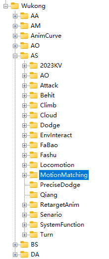
天命人动画资产分析
我们先观察天命人的角色动画。
- 短序列的纯 locomotion 动画，不带 root motion，例如循环的向前奔跑动画，以及大量的技能动画。不带 root motion 的动画显然不能直接用于 Motion Matching，所以是动画状态机的切换对象。
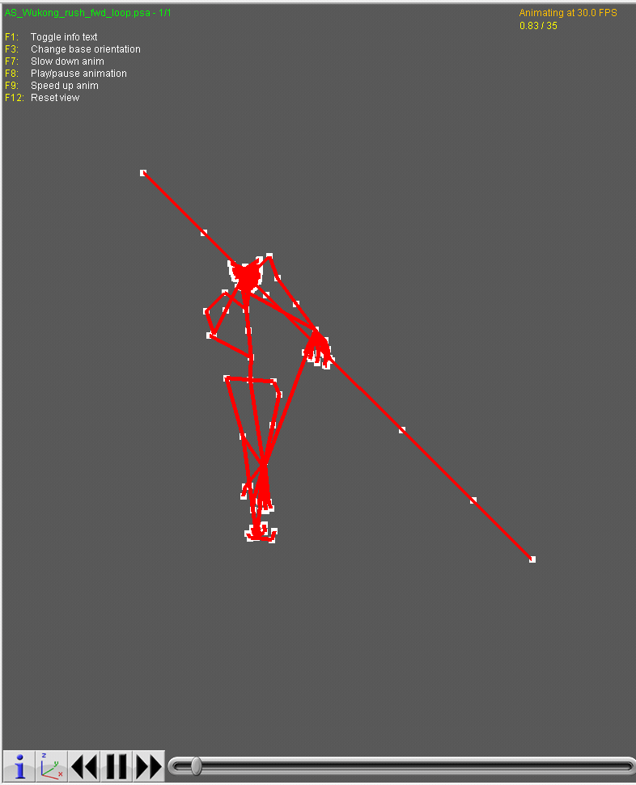
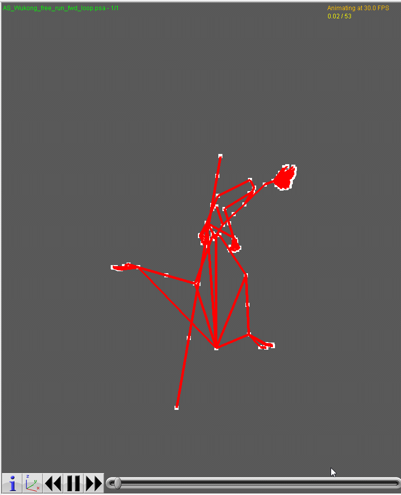
- 长序列的纯动捕动画，比如绕着转圈、往返跑、米字步，显然是给 Motion Matching 准备的。这里并没有发现与攻击、跳跃、技能有关的动捕动画。
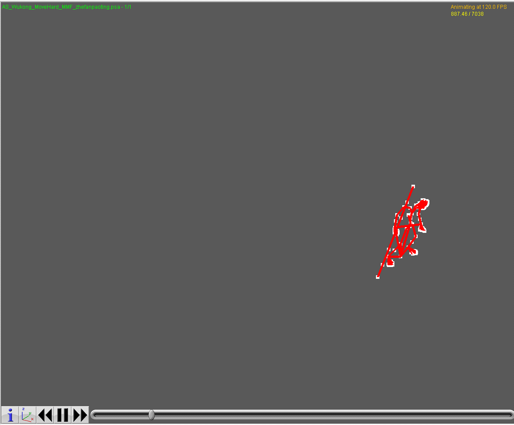
为什么会为两种截然不同动画方案都准备动画资产呢？推测是这样的：一开始，游科打算用 Motion Matching 直接解决所有主角角色动画，但发现主角技能组太多，Motion Matching 性能消耗可能太高，或者动捕数据比较昂贵，所以后来又转向了传统的动画状态机方案。
孙悟空的动画资产结构完全类似，同样包含以上两种类型的动画，这里不再赘述。
敌人动画资产分析
人形敌人
这里以 GYCY_Lang_04（广智）为例分析动画资产。MGD_yangjian_01（杨戬）的资产也是类似的，但技能组更丰富，因此动画资产的种类会更复杂。
在 GYCY_Lang_04 关联的动画资产中，所有的动画序列都带有动捕特点（自然、流畅程度高），并且有一些明显用于 Motion Matching 的动捕动画，例如下面的“米字步”动捕动画：
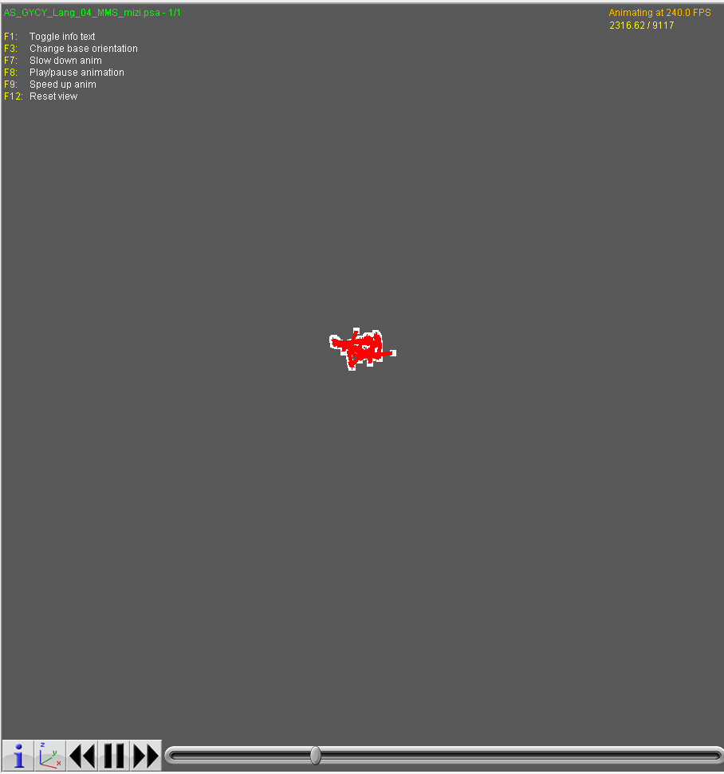
它恰好与游科在 2021 年 Motion Matching 分享时提到的动画序列完全相同：
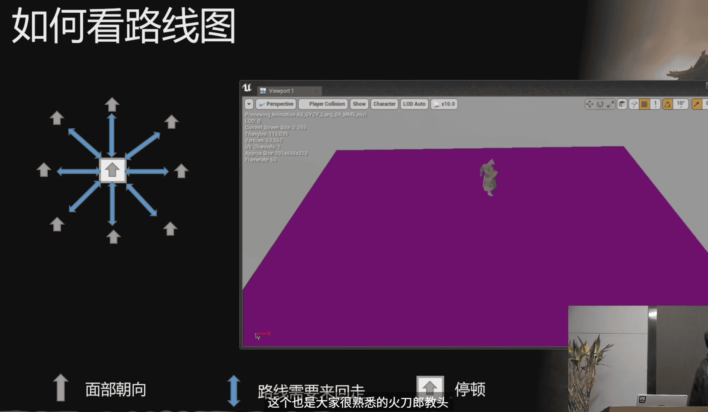
而且，没有发现不带 root motion 的纯 locomotion 动画，这种现象在多个敌人中均有出现。包括因此，可以推测，许多人形敌人在行走、跑步动画中使用了 Motion Matching，而在使用技能时，则使用动画状态机混合到相应的技能动画。这种 Motion Matching 方案不需要考虑玩家输入，或是未来的位置预测，因此性能可能会更好。
其他敌人
这里以 HYS_JiRuHuo（急如火）这种“人头怪”为例分析。
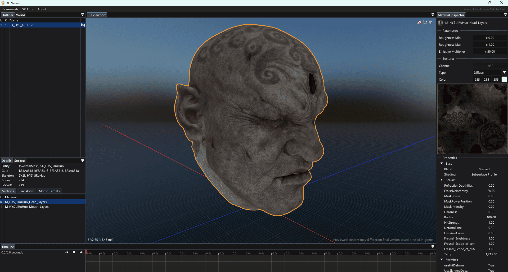
显然，这种圆滑的骨骼网格体不太可能通过动捕采集动画了，因此，基本上可以确认是程序生成或手 K 的滚动动画，如下所示：
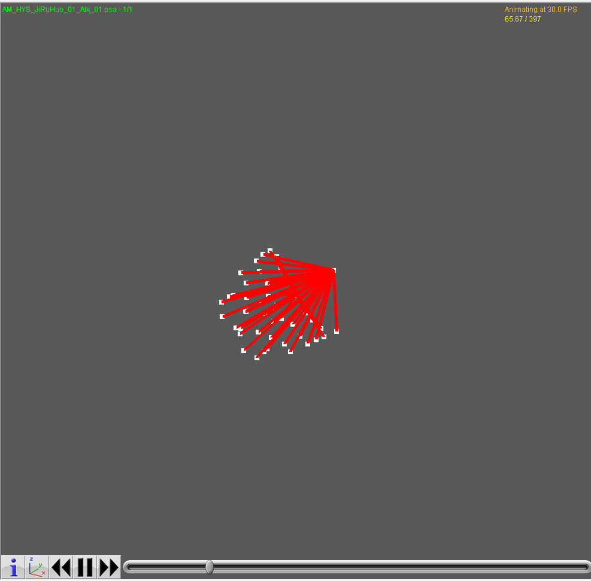
在这类敌人上，不可能使用 Motion Matching，只需使用动画状态机即可。
Motion Matching 数据库分析
FModel 可以序列化出游科改动过的 Filmstorm
开发的 Motion Matching 插件 产生的 Motion Matching
数据库，其类型名称为 AnimationAnalyzer，用于运行时查询
Motion Matching 的最优动画匹配。它由搜索参数集、参数权重信息和压缩成 K-D
tree 的动画数据集搜索空间构成。
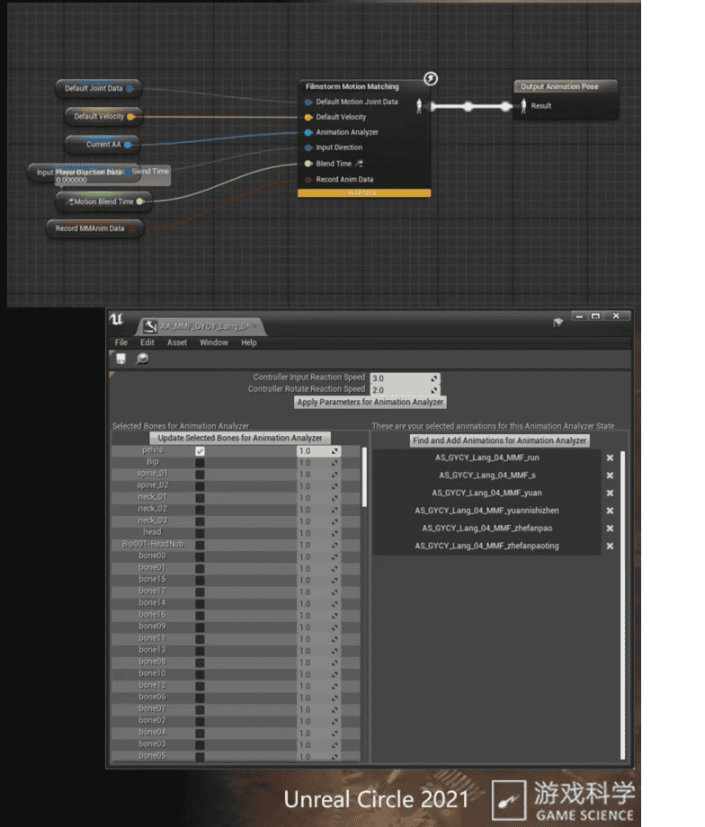
一个天命人的 locomotion 数据库的序列化的示例结果如下：
1 | [ |
可见，一个 Motion Matching 数据库包含以下内容：
- 适用于该 Motion Matching 数据库的骨骼，即天命人骨骼
SKEL_Wukong_Skeleton - Motion Matching 动画数据集，即 locomotion 动捕动画的资产
AnimationsInMemory - Motion Matching 需要匹配的关键骨骼及其权重
RefereIcedJoints和JointWeights。 - Motion Matching 匹配玩家输入的灵敏度
ControllerInputReactionSpeed和ControllerRotateReactionSpeed，这也是参数权重信息。 - 压缩成 K-D tree 的 Motion Matching 搜索空间
MMKDTree和AnimationReferences。这是数据库的主要部分，受空间所限无法一一列出内容。
在编辑器中调整 Motion Matching 资产后，程序会将动画资产中的每一帧（或取关键帧）根据参数集的维度建立 K-D tree，生成以上的数据库文件。运行时，Motion Matching 就会读入当前角色的关键骨骼的位置信息，玩家角色当前的速度、加速度，以及玩家输入，将这一系列参数作为搜索参数集，在 K-D tree 中做查询以输出与搜索参数最匹配动画帧。随后，即可将当前角色动画混合到该动画帧，实现流畅的过渡。
在翻阅资产时，可以发现天命人、孙悟空和人形敌人都具有以上的 Motion Matching 数据库，建得有模有样。然而，正如上文所分析的，从游戏中的表现来看，天命人的角色动画不像是使用了 Motion Matching 算法，所以天命人的 Motion Matching 数据很可能仅仅是遗留在游戏文件里，实际并不会被使用。
静态分析
总所周知，黑神话使用了 USharp 方案，用 C# 作为脚本系统。对黑神话的
USharp 核心 DLL BtlSvr.Main.dll
进行静态分析可以发现，游科实现了两套 locomotion 系统，一套是基于 Paragon
的状态机，一套是 Motion Matching。
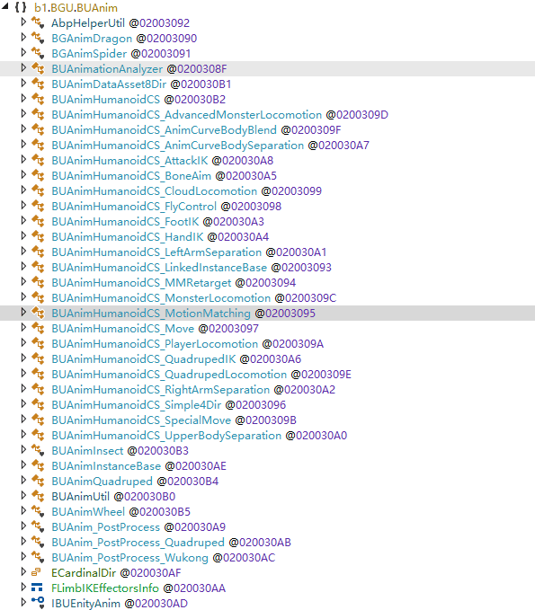
BUAnimHumanoidCS_PlayerLocomotion
模块设置了一个状态机，可控制玩家角色的移动。核心状态机逻辑如下：
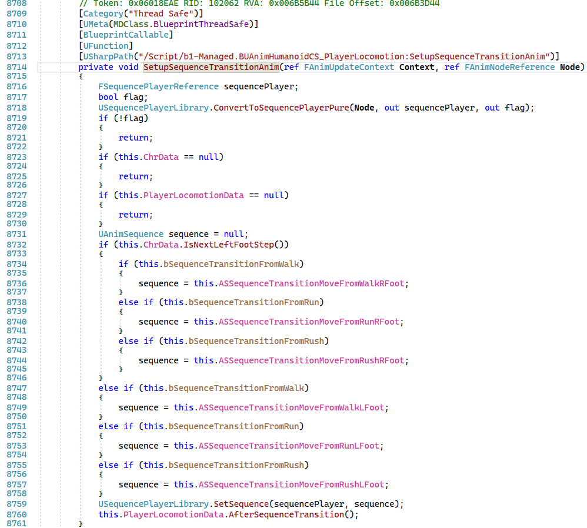
BUAnimHumanoidSetting_AdvancedMonsterLocomotion
模块则控制人形敌人的移动。部分核心逻辑如下：
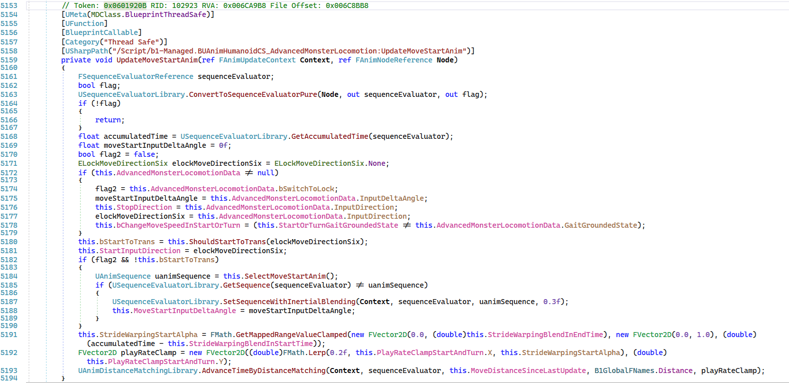
下列是 Motion Matching 相关的插件，实现了核心算法。不过可惜的是，Motion Matching 的核心算法都是 C++ native 写的，这里并不能直接反编译看到。
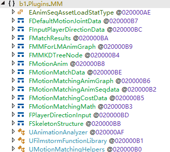
不过我们已经可以得出结论：游科开发了两种截然不同的 locomotion 方案，一个是基于 Motion Matching 的，一个是基于动画状态机的。至于游戏中用了哪个，只能是以下二者其一：
- 只使用了动画状态机
- 在行走、跑步动画中使用了 Motion Matching，其余如攻击、跳跃、技能等则使用了动画状态机。
而从游戏中的实机表现来看，天命人的跑步姿势就是状态机动画的 locomotion，而非 Motion Matching 的，所以，我更倾向于认为是前者。如果要完全确定，最稳妥的办法应该是在运行时动态分析，看看天命人角色动画到底有没有访问 Motion Matching 数据库了。对于人形敌人而言，由于游科也写了基于状态机的代码，所以他们的行走、跑步动画既可能用状态机，也可能用 Motion Matching。
动态分析
为了确定角色和敌人到底有没有使用 Motion Matching，不妨 Hook 游戏中动画相关的函数调用，看看有没有走 Motion Matching 相关的函数流程。这里我们直接在 C# 层面上 hook，使用 Harmony 动态 patch C# 函数。
经过一系列静态分析和动态
hook，我发现，BUAnimationAnalyzer.OnAnimationAssetLoadFinished
是一个加载 Motion Matching 相关动画资产的必经之路，内容如下：
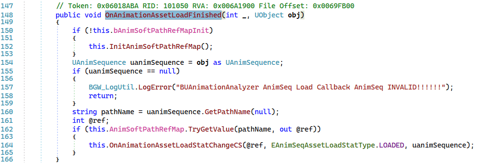
于是，hook 之，打印栈帧和加载的资产路径
obj as UAnimSequence.GetPathName()：
1 | [] |
运行游戏查看命令行的打印结果。我们的主角出生在黑风山的山麓，附近有一个闲置的狼弓手敌人，此时程序首次触发了 hook，打印了如下内容：
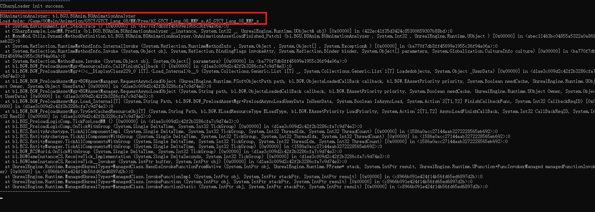
当主角靠近狼弓手时，狼弓手进入战斗状态，向主角射箭的同时，加载了剩余的 Lang_08 的 Motion Matching 资产。
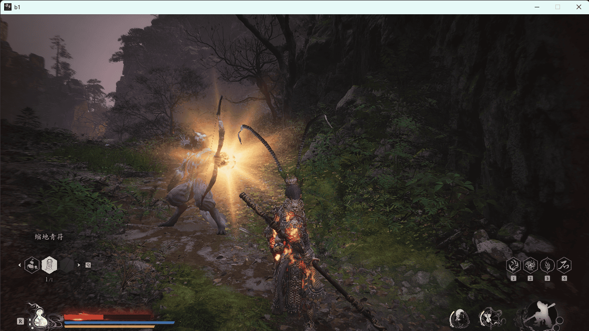
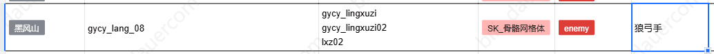
自始至终，程序没有 hook 到主角相关的 Motion Matching 资产加载，因此可以断定主角没有使用 Motion Matching 方案。
继续验证，开启广智挑战，发现程序 hook 到了 Lang_04 的 Motion Matching 资产，符合预期。自此，可以确定黑神话有不少的敌人是用 Motion Matching 方案实现的 locomotion。
游科为什么最后在主角动画上没用 Motion Matching
好的 Motion Matching 确实可以提高 locomotion 的动画质量，且避免复杂的动画状态机。但游科在最终的黑猴正式版游戏中却只在部分敌人中使用了 Motion Matching，可能是出于以下几点考虑：
- 动捕数据代价高昂，数据处理自动化困难（每个敌人分别动捕，但部分怪物难以动捕）。
- 技能相关动画难以动捕获取，往往需要美术发挥设计能力手 K。
- Motion Matching 运行时性能问题。
看来，即使是所谓的“先进”技术，在不同的项目背景下，也并非总是最佳选择。